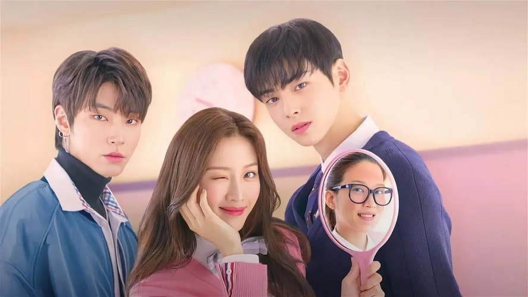

True Beauty uma comédia romântica sobre a garota do ensino médio Im Ju-gyeong (Moon Ga-young), que alcançou a fama de garota bonita depois de dominar a arte da maquiagem no YouTube. Ela se transforma em uma "deusa" por causa de suas habilidades de maquiagem, mas prefere morrer a revelar seu rosto despido para alguém. Conta sua história de amor com o único garoto que a viu sem maquiagem, Lee Su-ho (Cha Eun-woo), que é um menino atraente e bonito que parece frio por causa de seu passado sombrio, mas na verdade é muito atencioso. Eles crescem quando se encontram, compartilhando seus segredos e encontrando o amor um com o outro, mas Su-ho pode fazer Ju-gyeong encontrar sua verdadeira beleza.
